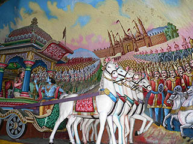

メキシコ珍寺修行、お次は
サンミゲル デ アジェンデという街に向かう。
グアナファトからはバスで1時間半程度。
この街は18世紀の街並みが残る人気観光地でもある。
まずは街の郊外にある
アトトニルコの聖域へと向かう。
実はこのアトトニルコに行く前にもうひとつ珍スポットへ行く予定だったのだが、残念ながら中に入れなかったのだが…まあ、それはいいや。
で、アトトニルコの聖域。

聖域というのはこの教会の事である。
外から見ると地味な教会だが、一歩足を踏み入れるととんでもない事になっている。
 こぼれ落ちてきそうな密度の天井画。
こぼれ落ちてきそうな密度の天井画。

天井という天井がビッシリと絵画で埋め尽くされているのだ！

見上げているとクラクラしてくる。

天井の形状に合わせて画面が歪んでいるので余計に目が回る。

この教会は
メキシコのシスティーナ礼拝堂とも呼ばれている。

血まみれのイエス様。

窓の縁なども絵で覆われている。

メインの聖堂だけでなく、脇の身廊にも壁画がビッシリと。
頭頭頭…

所々マンガの吹き出しみたいなモノがあり、何らかの説明をしているようだ。

この教会群は
スペインのバロック様式がメキシコに伝わった好例としてサンミゲルデアジェンデの街並みと共に世界遺産にもなっている。
これまで見てきたメキシカンバロックといえば彫刻ばかりだったが、これもまたヨーロッパのバロック様式を彷彿とさせる
やり過ぎっぷりだ。

レンガまで絵画。

宝石箱のような天井。

単なる装飾で良いのにその中に
わざわざ人物像を描き込む蛇足具合が私は大大好きである。
 アントニオ・マルティネス・デ・ポカサングレ
アントニオ・マルティネス・デ・ポカサングレという人が手掛けたという。
30年以上かけて完成させた力作だ。

祭壇には十字架から降ろされたイエスの彫像もあるが、とにかく
周りの壁画の圧が凄いので全然目立たない。

目立たない。

目立たない。

この
頭頭頭頭頭頭…の表現の仕方、凄いっすね。
どっかで見たような気がしたけど、あ、マレーシアだ。


痛そう。

ここまで装飾的だと感覚がマヒしてくる。
やりすぎメキシカン・バロック装飾の極北といえよう。
さて。
アトトニルコの聖域を充分に堪能したのでサンミゲル・デ・アジェンデの街に戻るとしよう。
と思ったがタクシーがどこにもいない。さらにUBERもない。
この教会に行く方は帰りの足を確保してから行った方がいいですよ。
で、やっと戻った
サンミゲル・デ・アジェンデ

街の中心に建つ教会をふらふら。
サンフェリペ・ネリ教会。


歩き疲れた時は大抵教会で休む。
すいやせん罰当たりで。

キリスト像の後ろに沢山のミラグロがある。

これも信者の奉納物だ。
座って祈りを捧げているデザインのモノが多いが、中には身体の悪い部分のミラグロを捧げる場合もある。
手や足、目、胃、たまにチンチンも見かける。
またハートのミラグロは心臓病とかではなく、命を捧げるとか心を捧げる的な意味合い。
動物のミラグロは家畜が増えた御礼だろうか。
中には家や車のミラグロもある。

イエス様も車や家の世話までしなきゃなんて大変ですね。自分の事で精一杯なのに。

重厚な彫刻のファサードが印象的なサンフランシスコ教会。

赤い石で出来た教会。サンミゲル教区教会。
この辺りが街の中心部なので大勢の観光客が闊歩していた。

新年を祝う大人形。
皆大人形と一緒に記念撮影。

その一画にあったアンティークショップ。

この店はかなり派手な民芸品が沢山あった。

中心街にあるアルテサニアス市場は民芸品の宝庫だった。
この街は手工業で発展したので様々な手工芸品が店頭に並んでいた。

このハートもミラグロの心臓が装飾用に進化したもの。
スペイン語ではよくミ・コラソン（私の心）という言葉を耳にするが、それを具体化させたような民芸品だ。

再び中心部の広場。
少し寒かったがテキーラ味のジェラードを食べた。
確かにテキーラ味だった。

陽も傾いて来たので帰ろうか。
…と思ったら、グアナファト行きのバスが満席で何回か乗り継いでやっとの事グアナファトに戻ることが出来た。
この日は移動トラブルの多い一日だった。
次の修行へVAMOS！